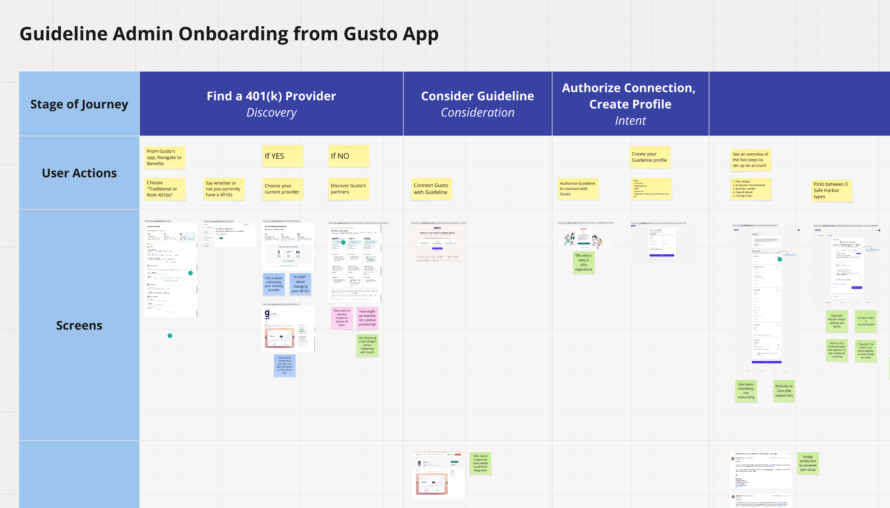
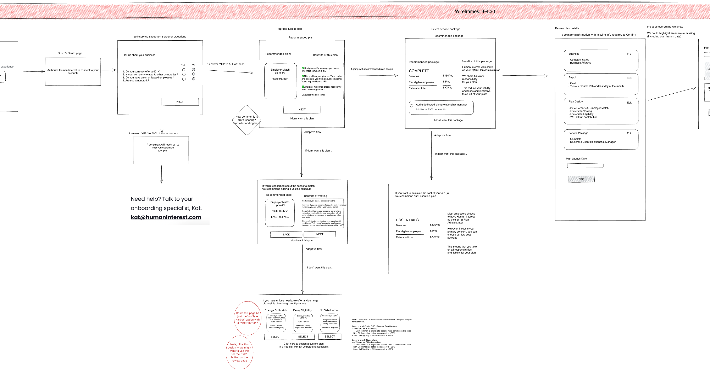
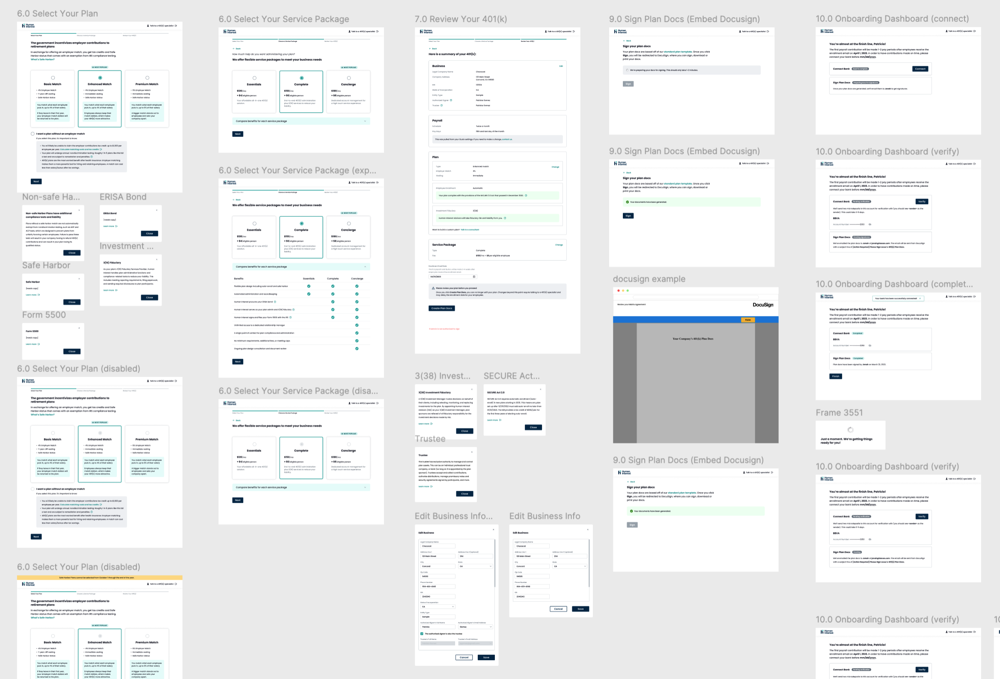
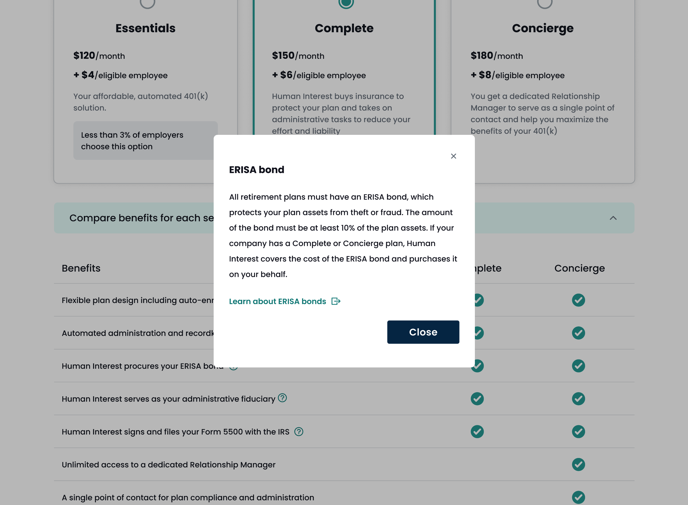
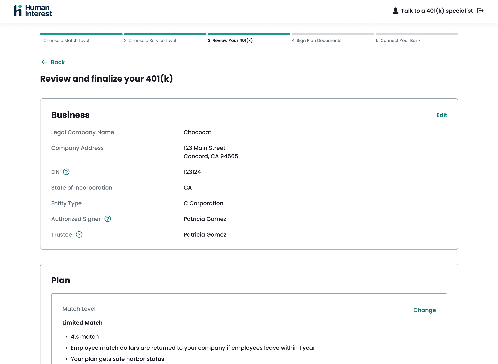
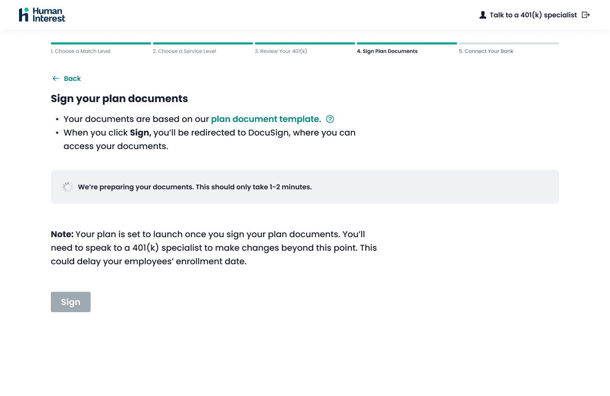
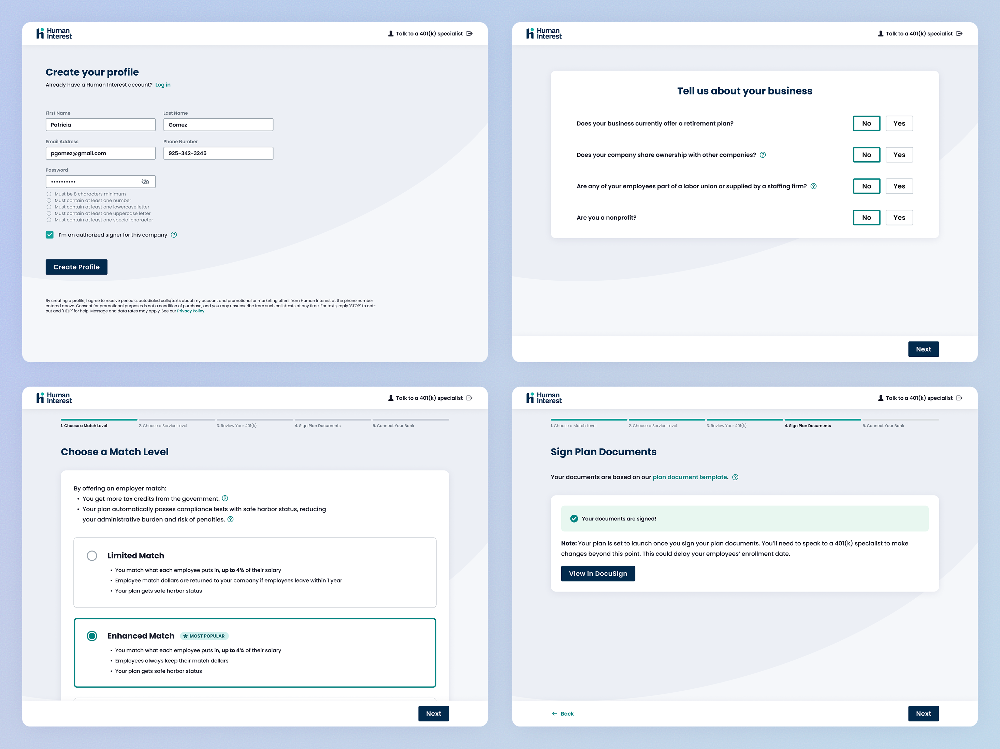

Helping businesses unlock retirement benefits sooner by transforming a complex 401(k) onboarding experience into one that's modern, guided, and effortless.
User Research
Design Systems
QA Testing
Human Interest stays a Preferred 401(k) Provider to Gusto
Human Interest was having a churn crisis. Some admins were taking up to 90 days to launch a 401(k). Some abandoned the process altogether.

Jargon made it difficult for 401(k) newcomers to understand
Concepts were poorly explained and admins didn't know how they affected their responsibilities.
No visibility into what onboarding involved.
Admins thought they were "finished" with certain tasks, but were frustrated to find out that there were more left.
Admins are required to speak to an implementation specialist to launch.
Even if an admin could get through the flow on their own, they couldn't launch their plan without talking to an implementation specialist who they've described as "only there to sell a more expensive plan".
Gusto, a major referral partner, received years of onboarding complaints and was ready to drop Human Interest as a partner, risking a 20% loss in margins for our business.
We were given 6 months to revamp the setup experience. Leadership assembled a cross-functional squad including myself to lead the design efforts of this initiative (dubbed "Fast Track") which became the company's highest priority for the year, calling upon superstars across Growth, Sales, Integrations, and Legal.
Before ideating, we synthesized feedback from implementation specialists and audited competitor flows. The takeaway: 401(k) onboarding is long and tedious, yet 75%+ of admins want a conventional plan.

We had a lightbulb moment: radically simplify onboarding by asking admins to make only the essential decisions upfront, with smart defaults they can change while deferring the rest until it matters.
We drew a line between necessary inputs for plan launch vs. post-onboarding tasks. To deliver this within 6 months, our strategy was to go after plans of the following criteria:
Startup plan
This is the first time that this employer offers a 401(k).
No controlled groups
Businesses under common ownership are not eligible.
Referred by Gusto
The plan going through this new flow has to have signed up with Gusto as their payroll provider.
My earliest concepts were explored in a whiteboard jam with the Chief Experience Officer and Product, and focused on making it easy for admins to "just click next" through the flow.
The designs were iterated until the team felt good enough to present them to a broader group of stakeholders. In these later feedback rounds, we balanced copy recommendations from Legal, acknowledged technical limitations from the Integrations team, and mapped out the opportunity pipeline with Growth.


The new concept was not only a massive shift from our current flow, but it also defied what the rest of the industry was doing. Years' worth of user testimonies and churn data gave us confidence that this was the direction users wanted. Below is a summary of the improvements:

Admins can self-start the process
Admins are asked screening questions to qualify for the new flow. If they aren't eligible, they'll be routed to a specialist to build a more bespoke 401(k) plan.

Smart defaults but with context
We provide social proof and relevant information as to why certain plan configurations are more/less popular.

Automate data entry with what admins have already shared with Gusto
Because the prereq is that admins must have signed up for Gusto payroll before being routed to our flow, we can integrate with Gusto to pull in that information, saving admins from redundant work.

DocuSign integration
Admins won't need to go through a 50+ page plan doc in their email to sign. They can use DocuSign's streamlined signing experience right inside the flow.
The proposals treated 401(k) setup differently than conventional onboarding flows where users complete task after task in a checklist. We put these ideas in front of 6 admin recruits. While they said the flow was intuitive, we identified a few risks.
Safe Harbor was confusing
Few knew what this meant. People ended up Googling it while going through the flow, and went down the rabbithole of what our competitors offer.
Admins wanted to see more pricing options
We intentionally promoted a higher tier plan with subtle pathways to the lower ones, but people wanted to see all their options.
Designs were reworked to stop headlining with Safe Harbor. In response, people didn't flinch when it was subtly introduced in body text. We also opted for a side by side comparison of the tiers, which made the experience feel more trustworthy and less sales-y.

The final push was applying HUI, Human Interest's design system—but I quickly realized it wasn't built to support the complex components and workflows needed for admin-facing experiences.
The current design system catered to consumers with simple but unnecessarily large and flashy elements. I reused as much as I could while creating several new components better suited for the operations in Fast Track. These new components would also come in handy for building out our platform tools in the future. The result was a more comprehensive design system with a playful tune.


Fast Track went live and in its first week of public release, we saw an increase of 900% in signups.
Fast Track launched in beta to Gusto customers, and then to everyone else in September 2023. The results: we hit a recordbreaking amount of signups and stayed a preferred partner to Gusto. The bet paid off because it was so successful that in the coming years, Human Interest started supporting this as a product line with a dedicated team to evolve it. This validated that there is a market of savvy but busy admins who want a no-touch setup. Read more about the product release here.